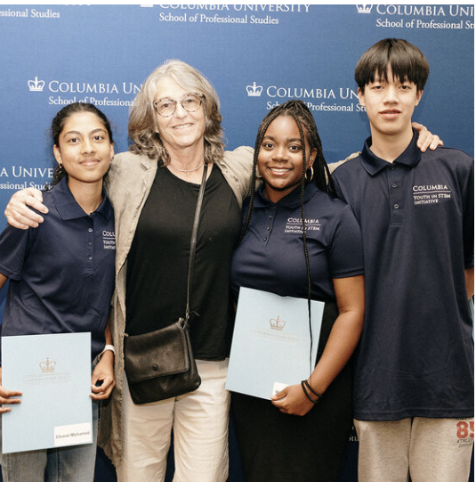

Every Sunday for 20 weeks I took two courses about machine learning and cryptocurrency online. I learned a lot about blockchains and cryptocurrency. I also learned what machine learning is and how it works. I was able to somewhat learn about the coding language R. We would sometimes also have to go in person to Columbia to attend lectures and talk about college. During the course of 6 months, we had to make a presentation on how we would solve a NYC housing crisis issue. We worked with a team and a coach that would help us. At the end of the program, we had to attend an end-of-program residency in June where we listened to speakers all around the world. In the end, we had to present our projects to family, friends, and judges. At the end-of-program residency I was learn about STEM careers, college readiness, global humanities, and more.
For this project we decided to do some kind of service that would help with the NYC housing crisis. Our service would aggergate valuable data about lots in NYC and make it aviable to key stakeholders and potentially build 1000+ homes for the homeless or low income. We want to do this because there are about 114,000 public students who are homeless, 29,000 childeren living in shelters, and takes years for planning and approval to build buildings. With our service we are able to build homes for the homeless and accelerate the time to build a home.